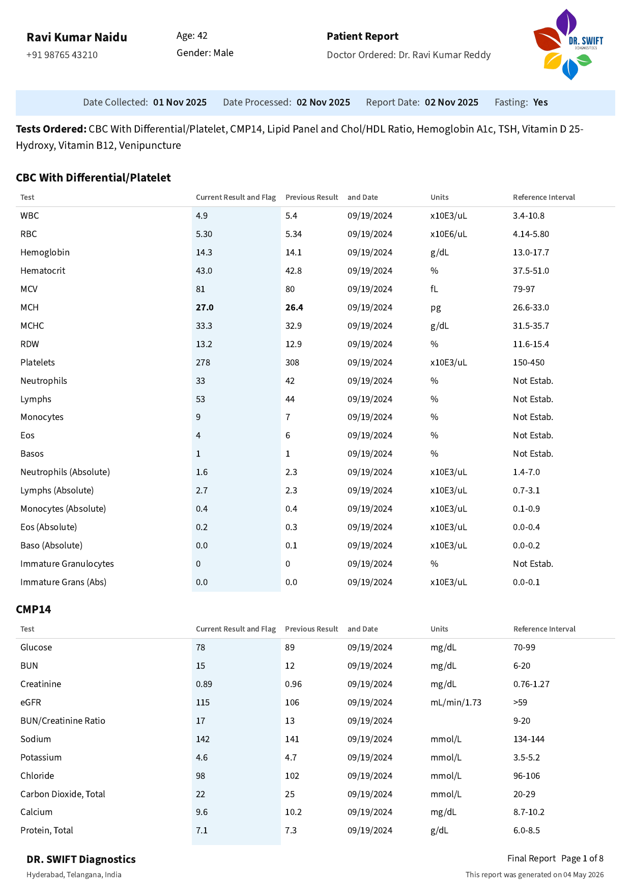

Sample report
Preview a Dr.Swift report
See how Dr.Swift presents current values, previous values, reference intervals, fasting status, doctor details, and clinical tables in one doctor-ready PDF.
Sample report
See how Dr.Swift presents current values, previous values, reference intervals, fasting status, doctor details, and clinical tables in one doctor-ready PDF.

HbA1c, cholesterol, and more over time.
Color-coded healthy, borderline, and high.
Print-ready format for visits.
Switch between household members.